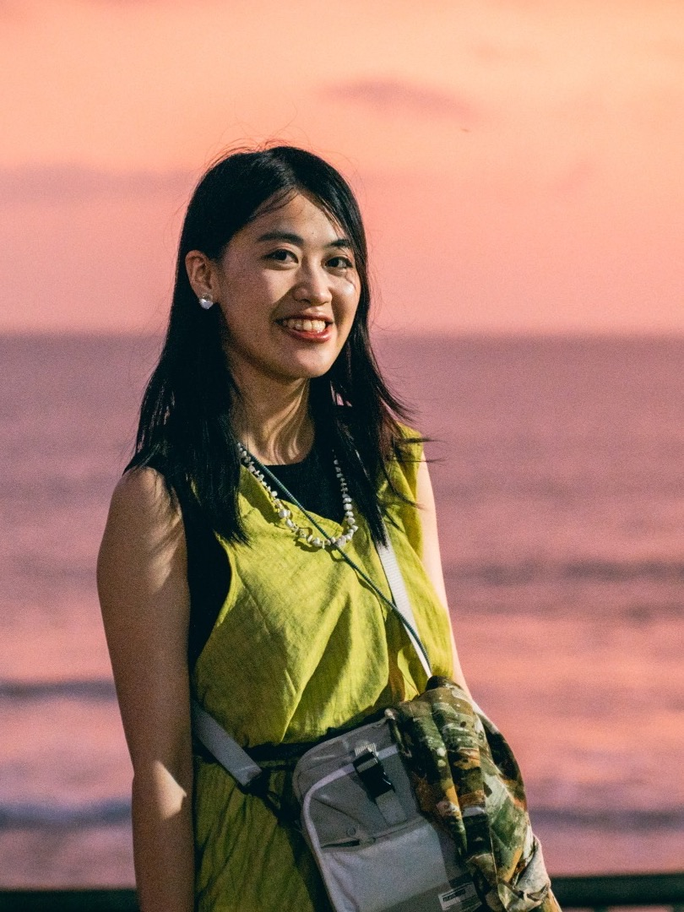

A little fluid.
A little me.
Chian-Pei Yang
Visual artist and designer based in Taiwan
Design Manager at One-Forty / Freelance Visual Designer
My work moves between two concerns: how art and design connect to social issues, and how we explore and heal ourselves.
For years I have made visual and social design for One-Forty, a nonprofit supporting Southeast Asian migrant workers in Taiwan, where I am Design Manager. In my own practice, I turn inward.

Education
National Taiwan University of Arts
Master’s degree · Visual Communication Design · August 2019
National Taichung University of Education
Bachelor’s degree · Digital Content and Technology · June 2016
Experience
Freelance Visual Designer · 2019 – Present
Clients and collaborators include ZAZA, Liang-shean Tang Social Welfare Foundation, Amnesty International Taiwan, and Kari (exhibition and book design).
One-Forty · Design Manager
Current projects
Hey, Give Me a Hug · in progress
A personal picture book about my path toward reconciling with myself, and the challenges along it.
Inspired by runes, I record what I become aware of while relaxing, and draw the moments I recognise as love.
City Breathing · in concept
Looking for faces and traces of movement in the city, to record its vitality.